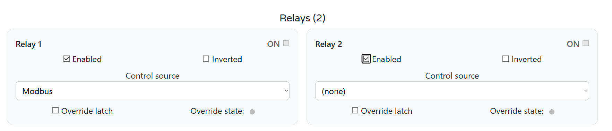
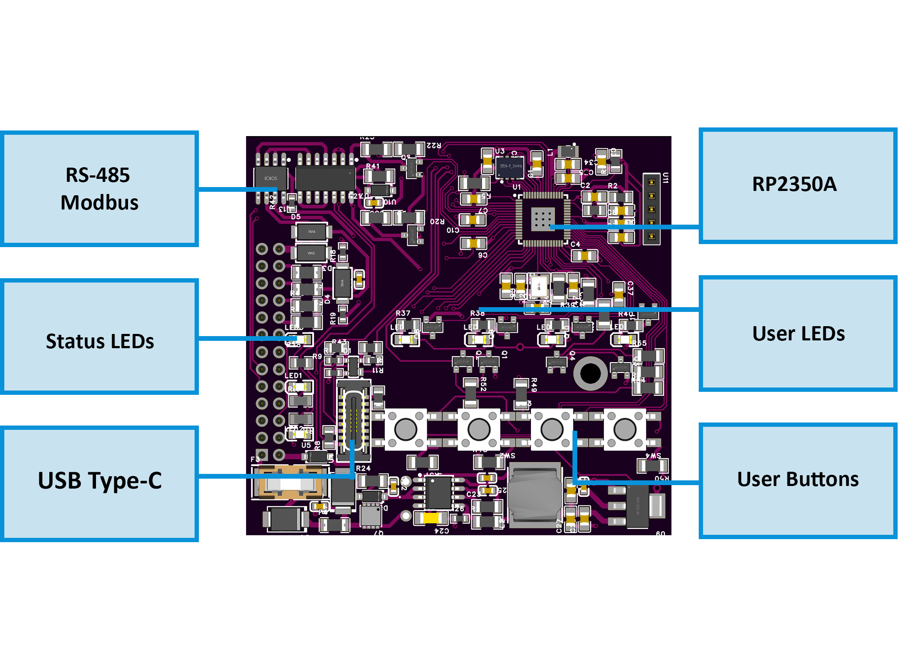

Firmware Version: 2025-10 snapshot
WLD-521-R1 — Water Meter & Leak Detection Module
HOMEMASTER – Modular control. Custom logic.

Module Description
The WLD-521-R1 is a configurable smart I/O module designed for leak detection, water flow metering, heat energy monitoring, and local irrigation control.
It includes 5 opto-isolated digital inputs, 2 SPDT relays, and optional 4 buttons and 4 LEDs for manual control and local status indication. Configuration is performed via the
WebConfig interface over USB-C (Web Serial).
The module connects over RS-485 (Modbus RTU) to a MicroPLC or MiniPLC, enabling deployment in water management, hydronic heating, garden irrigation, and safety automation systems.
Table of Contents
- 1. Introduction
- 2. Use Cases
- 3. Safety Information
- 4. Installation & Quick Start
- 5. WLD-521-R1 — Technical Specification
- 6. Modbus RTU Communication
- 7. ESPHome Integration Guide (if applicable)
- 8. Programming & Customization
- 9. Maintenance & Troubleshooting
- 10. Open Source & Licensing
- 11. Downloads
- 12. Support
1. Introduction
1.1 Overview of the WLD-521-R1
The WLD-521-R1 is a DIN‑rail smart I/O module for leak detection, pulse water metering, ΔT heat monitoring, and local irrigation control. It exposes 5 opto‑isolated digital inputs, 2 SPDT relays, 4 user buttons, and 4 status LEDs and is serviced over USB‑C.
It integrates with a MiniPLC/MicroPLC (or other PLC/SCADA/HA controllers) via Modbus RTU over RS‑485.
Configuration is done in a browser using the WebConfig tool (Web Serial over USB‑C): set Modbus params, choose per‑input modes (sensor/counter), link 1‑Wire temperature sensors,
and enable autonomous irrigation/flow‑safety logic.
In one line: a resilient water‑safety/flow module with local logic that still plays perfectly with your PLC and Home Assistant stack.
1.2 Features & Architecture
| Subsystem | Qty | Description |
|---|---|---|
| Digital Inputs | 5 | Opto‑isolated inputs with MOSFET front‑ends, debouncing, and isolated return (GND_ISO); suitable for dry contacts or pulse flowmeters. |
| Analog Outputs | 0 | — |
| Relays | 2 | SPDT dry contacts (~3 A @ 250 VAC); driven via opto‑isolated stages and RC/snubber‑protected. Terminals NO/COM/NC exposed. |
| 1‑Wire Bus | 1 | Protected 3‑pin header (+5 V / DATA / GND) with level shifting and ESD protection; supports DS18B20 sensors. |
| LEDs | 4 user + status | 4 user LEDs controlled via transistor drivers; additional LEDs for power and RS‑485 TX/RX activity. |
| Buttons | 4 | Front‑panel tactile buttons for relay override, irrigation control, and test functions. |
| Modbus RTU | Yes | RS‑485 transceiver with surge/bias/ESD protection and DE/RE control. Typical config: 19200 baud, 8N1. |
| USB‑C | Yes | Type‑C port with ESD protection and Web Serial interface; used for configuration via WebConfig. |
| Power | 24 VDC | Fused, reverse‑protected input. Internal buck regulator provides +5 V and +3.3 V. Isolated +5 V and +12 V rails available for sensor power. |
| MCU | RP2350A | Dual-core MCU with QSPI flash and 12 MHz crystal; SWD debug header available. |
| Protection | TVS, PTC, ESD | Multi-stage protection on RS‑485 and USB lines; isolated sensor rails; opto‑isolated inputs; snubbers on relays. |
Optional: 1‑Wire bus for DS18B20 sensors (e.g. supply/return temperatures for heat energy monitoring).
1.3 System Role & Communication 💧
The WLD-521-R1 is a smart Modbus RTU slave. It can operate autonomously for leak/flow/irrigation safety logic, while exposing its I/O and sensors to a PLC, ESPHome controller, or SCADA system.
| System Position | Expansion module on RS‑485 trunk |
| Master Controller | MiniPLC / MicroPLC or any third‑party Modbus RTU master |
| Address / Baud | Configurable via WebConfig (1–255, 9600–115200 baud) |
| Bus Type | RS‑485 multi‑drop (A/B/COM terminals) |
| USB‑C Port | For configuration/diagnostics using Web Serial (Chrome/Edge) |
| Default Modbus ID | 3 (user‑changeable per module) |
| Daisy‑Chaining | Multiple modules supported; assign unique IDs to each device |
2. Use Cases
The WLD-521-R1 supports a range of real-world applications in leak detection, flow metering, hydronic energy monitoring, and irrigation control. Below are practical scenarios with step-by-step configuration.
💧 1) Basement Leak Alarm + Auto Shut-off
Goal: Detect water leaks and immediately shut off the water supply using a relay-controlled valve.
- Set DI1 as Water sensor
- Enable DI1 and set Action = Toggle
- Set Control target = Relay 1
- Wire a motorized shut-off valve (normally open) to R1
- (Optional) Assign LED1 to blink on DI1 or R1
🌿 2) Garden Irrigation with Flow Supervision
Goal: Automate watering safely with flow monitoring and environmental interlocks.
- Go to Irrigation → Zone 1
- Set Valve relay = Relay 2, Flow DI = DI2
- Enable Use flow supervision
- Configure:
- Min rate = 0.2 L/min
- Grace = 8 s
- Timeout = 1200 s
- Target liters = 50
- Add interlocks:
- DI_moist = DI3 (dry = run)
- DI_rain = DI4 (rain = block)
- R_pump = Relay 1 (pump ON when watering)
- Enable Window: 06:00–08:00 with Auto-start
📈 3) Water Consumption Metering (Billing)
Goal: Track water usage in liters using pulse flow meters.
- Set DI2 to Water counter
- Enter Pulses per liter = 450 (typical)
- Adjust Rate × / Total × as needed for calibration
- Use Reset total to baseline reading
- Use Calc from external after external validation
- View Live rate (L/min) and Total (L) in WebConfig
🔥 4) Heat Energy Monitoring (Hydronic ΔT Loops)
Goal: Measure heat power and energy from flow and temperature sensors.
- Set DI3 = Water counter
- Enable Heat on DI3
- Assign Sensor A = #1 (supply), Sensor B = #2 (return)
- Set thermal constants:
- cp = 4186 J/kg·°C
- ρ = 1.0 kg/L
- Adjust Calibration × if needed
- View TA, TB, ΔT, Power (W), Energy (J/kWh)
- Use Reset energy to zero counters
3. Safety Information
These safety instructions apply to the WLD‑521‑R1 module. Improper handling or wiring can cause equipment damage, system failure, or personal injury.
3.1 General Requirements
| Requirement | Detail |
|---|---|
| Qualified Personnel | Only trained installers or technicians may handle wiring and system integration. |
| Power Isolation | Disconnect 24 VDC power before modifying terminals or servicing the device. |
| Environmental Limits | Install inside a dry, clean DIN enclosure. Avoid condensation, dust, or vibration. |
| Grounding | Connect 0 V, RS-485 COM, and GND_ISO appropriately. Maintain logic and sensor isolation. |
| Voltage Compliance | Observe electrical ratings: 24 VDC supply, 5/12 V sensor outputs, max 3 A relay load. |
3.2 Installation Practices
| Task | Guidance |
|---|---|
| DIN Mounting | Secure module on 35 mm DIN rail. Apply strain relief to all wiring. |
| ESD Precaution | Use anti-static strap and handle boards by casing only. |
| Power Wiring | Connect regulated 24 VDC to V+ / 0V terminals. Fuse upstream. |
| Relay Wiring | Use NO / COM / NC terminals for each relay. Relays are dry contact SPDT only. External loads must have their own power. |
| Digital Inputs | Connect dry-contact sensors or open-collector devices to I1–I5, with return to GND_ISO (not 0V). |
| Sensor Power | Use +5 V or +12 V outputs (right-side terminals) for low-power field sensors only. |
| GND Domains | Keep GND_ISO (inputs) and 0 V / GND (logic) isolated unless explicitly bridged. |
| RS-485 Wiring | Wire A/B/COM to RS‑485 master. Maintain A↔A, B↔B polarity. COM = signal reference. Terminate both ends with ~120 Ω. |
| Commissioning | Before applying power: verify polarity, relay contact wiring, RS‑485 line, and ensure sensor loads are within spec. |
3.3 I/O & Interface Warnings
🔌 Power
| Interface | Warning |
|---|---|
| V+ / 0V (Top-left) | Connect only regulated 24 VDC. Reverse protected. Never exceed 30 V. |
| +5 V / +12 V (Bottom-right) | Isolated sensor supply. Use for dry-contact sensors only. Protected by DC-DC and fuses. Not for powering relays or actuators. |
⸠Inputs & Relays
| Interface | Warning |
|---|---|
| Inputs I1–I5 (Top row) | Opto-isolated channels. Connect only dry-contact or open-collector sources. Return via GND (top right) (this is GND_ISO, not logic ground). |
| Relays (Bottom row) | NC / COM / NO per relay. Dry contact only. Max: 3 A @ 250 VAC / 30 VDC. Use snubbers for inductive loads (e.g. pumps, valves). |
| Relay Power | Relay contacts are not powered. External load must have its own power source. |
🔗 Communication & USB
| Interface | Warning |
|---|---|
| RS‑485 A/B/COM (Bottom left) | Use twisted pair for A/B. COM is signal ground. Protect against surges. Not suitable for long unshielded runs or outdoor wiring. |
| USB‑C (Front panel) | For setup only using Web Serial in Chrome/Edge. ESD protected. Not for field use or runtime connection. Disconnect after configuration. |
🔘 User Interface
| Element | Notes |
|---|---|
| Buttons (U1–U4) | Configurable: relay override, irrigation start/stop. Button press may override Modbus or automation logic. |
| LEDs (U1–U4) | Configurable for DI, Relay, or Irrigation indication. Driven from MCU via transistors. |
🛡 Shielding & EMC
| Area | Recommendation |
|---|---|
| Cable Shielding | Use shielded cable for RS‑485 and sensor lines. Terminate shield at controller end only. Avoid routing near motors/VFDs. |
| Inductive Loads | Use RC snubbers or TVS across relay contacts for solenoids, pumps, or coils. |
4. Installation & Quick Start
4.1 What You Need
| Category | Item | Details |
|---|---|---|
| Hardware | WLD‑521‑R1 | DIN‑rail module with 5 opto DIs, 2 SPDT relays, 4 buttons, 4 LEDs, RS‑485, USB‑C, 1‑Wire, and isolated +5 V / +12 V sensor rails. |
| Controller (master) | HomeMaster MiniPLC/MicroPLC or any Modbus RTU master device. | |
| 24 VDC PSU (SELV) | Regulated 24 VDC supply to V+ / 0V; size to include module + sensors. | |
| RS‑485 cable | Shielded twisted pair for A/B + COM (GND); use 120 Ω termination at both bus ends. | |
| USB‑C cable | Used for setup/config via WebConfig in Chromium browser. | |
| DIN enclosure | Dry, clean cabinet with DIN rail; provide strain relief and shield grounding. | |
| Software | WebConfig (browser) | Configure Address / Baud, assign Inputs / Relays / Buttons / LEDs, irrigation zones, sensors, etc. |
| ESPHome (optional) | On controller: polls Modbus, exposes WLD sensors and relays to Home Assistant. | |
| Field I/O | Dry contacts | Inputs DI1…DI5 return to GND_ISO; supports leak probes, flow meters, or buttons. |
| Relay loads | RLY1/RLY2: COM/NO/NC dry contacts; up to 3 A @ 250 VAC. Use RC/TVS snubbers for inductive loads. | |
| Sensor power (isolated) | Bottom-right +12 V / +5 V ISO terminals for low-power sensors only. Not for actuators. | |
| Tools | Screwdrivers, ferrules, meter | Verify terminal torque, polarity, and RS‑485 A/B wiring. Use 120 Ω resistors and surge protectors if needed. |
Status LEDs: • PWR – steady ON when powered • TX/RX – blink on RS‑485 activity • USB – active when connected for WebConfig
4.2 Power
The WLD‑521‑R1 operates from a regulated 24 VDC supply connected to the top terminals labeled V+ and 0V. The power supply should be SELV-rated and appropriately sized.
Power Supply Notes
- Input: 24 VDC, reverse‑protected and fused onboard
- Internal regulation:
- 5 V logic (buck regulated via AP64501)
- 3.3 V logic (via AMS1117-3.3)
- +12 V ISO (for field sensors via B2412S‑2WR3)
- +5 V ISO (via B2405S‑2WR3)
Power Budget (Estimates)
| Load | Typical Current |
|---|---|
| Base logic + LEDs | ~50 mA |
| Each relay (coil) | ~40–60 mA |
| Sensor rails (total) | ≤150 mA (shared between +5 V ISO / +12 V ISO) |
Recommended PSU: ≥300 mA per module (with 30% headroom).
âš ï¸ Only use the sensor rails for low-power sensors like leak probes and flow meters. Never power relays, valves, or actuators from the module’s +5 V / +12 V outputs.
4.3 Communication
The WLD‑521‑R1 uses Modbus RTU over RS‑485 for all runtime communication, and USB‑C for setup via browser.
RS‑485 Pinout (Bottom Left Terminals)
| Terminal | Function |
|---|---|
| A | RS‑485 A (Data +) |
| B | RS‑485 B (Data –) |
| COM | RS‑485 reference ground (connect to controller GND) |
- Wire A → A, B → B, COM → COM
- Use twisted‑pair cable and terminate at both ends (120 Ω)
- Avoid star topologies; keep stubs short
- Shielded cable is recommended for EMI immunity
Modbus Settings
| Parameter | Default | Range |
|---|---|---|
| Address | 3 | 1–255 (set via WebConfig) |
| Baudrate | 19200 | 9600–115200 (WebConfig) |
| Format | 8N1 | 8 data bits, no parity, 1 stop bit |
WebConfig allows you to set the Modbus address and baudrate via USB‑C before connecting to a PLC or ESPHome controller.
4.4 Installation & Wiring
Use diagrams and explain:
- Inputs
- Relays
- Sensor rails (12/5V)
- RS‑485 terminals
- USB port
4.5 Software & UI Configuration
The WLD‑521‑R1 is configured using WebConfig — a driverless USB‑C interface that runs in Chrome/Edge via Web Serial. All settings apply immediately and are saved to the module's flash.
🔌 WebConfig Setup
- Connect the module to your PC using a USB-C cable.
- Open https://www.home-master.eu/configtool-wld-521-r1 in Chrome or Edge.
- Click “Connect†and select the serial device.
- The header will show the Active Modbus Configuration (Address, Baudrate).
You can safely reset or update Modbus settings at any time.
🧩 Modbus Address & Baudrate
- Set Address (1–255): each module must have a unique address.
- Set Baudrate: choose between 9600–115200 (default: 19200).
- Confirm the updated settings in the banner and Serial Log.

🔠Input Configuration (DI1–DI5)
Each DI has:
- Enable / Invert
- Type:
Water sensor,Soil moisture,Water counter
For Water sensor / Soil moisture:
- Action:
None,Toggle, orPulse - Control Target:
All,Relay 1,Relay 2,None
For Water counter:
- Pulses per Liter (PPL) (e.g., 450)
- Rate × / Total × calibration
- Live Flow: Rate (L/min), Total (L)
- Reset Total / Reset Pulses
- Calc from External to align totals with an external meter

🔥 Heat Energy Calculation (Optional on Counter DIs)
Enable Heat on a DI to calculate:
- ΔT from 1‑Wire
Sensor A–Sensor B - Power (W) and Energy (J / kWh) using:
- cp (J/kg·°C), ρ (kg/L), Calibration ×
Formula:Power = cp × ρ × ΔT × FlowRateEnergy = ∑ Power × Δt
You can view TA, TB, ΔT, Power, Energy and reset energy counters.

⚙️ Relay Logic Configuration (Relay 1 & 2)
- Enable / Invert
- Control Source:
Modbus,Local Logic, orNone - Manual Override: ON/OFF, with Latch option
Relays are dry contact. Wire loads to NO / NC / COM.

🔵 LED Mapping (LED1–LED4)
- Mode:
SolidorBlink - Source:
DI1–DI5,Relay 1/2,Irrig 1/2,Override R1/R2

🔘 Button Configuration (BTN1–BTN4)
- Relays:
Toggle R1/R2,Pulse R1/R2 - Irrigation:
Start/Stop Zone 1/2 - Manual Override:
R1/R2 Override Toggle
Button Press Behavior: Short press = toggle; Long press (~3s) = enter/exit override (relay ignores Modbus/logic while overridden).
🧪 Testing & Diagnostics
- Serial Log to watch live changes
- Status pills on component cards for DI/relay/button states
- Reset Device for safe module reboot
⏰ Clock & Home Assistant Sync
- Use coil 360 =
CMD_TIME_MIDNIGHTto sync at 00:00 - Optionally set Minute of day (
HREG 1100) and Day index (HREG 1101)
Ensures irrigation windows behave predictably and counters roll over cleanly.
WebConfig saves changes immediately to flash. Disconnect USB‑C after setup — the device runs autonomously and responds to Modbus polling.
4.6 Getting Started
- Wiring — Power, RS‑485, Inputs/Relays, sensor rails
- Configuration — WebConfig: address/baud, inputs/relays/buttons/LEDs, irrigation & heat if used
- Integration — PLC/ESPHome polling and dashboards
5. WLD‑521‑R1 — Technical Specification
This section consolidates diagrams, I/O, electrical limits, firmware behavior, connector map, mechanics, and compliance for quick reference.
5.1 Diagrams & Pinouts
System Block Diagram
|
Terminal Map
|
Field Board Layout
|
MCU Board Layout  |
5.2 I/O Summary
| Interface | Qty | Description |
|---|---|---|
| Digital Inputs | 5 | Opto‑isolated DI (dry contact / open‑collector / pulse for flow meters); isolated return (GND_ISO). |
| Relay Outputs | 2 | SPDT dry contact (NO/C/NC); snubbered; local/Modbus/logic control. |
| User LEDs | 4 | Configurable (Solid/Blink) for DI/Relay/Irrigation/Override feedback. |
| User Buttons | 4 | Assignable actions (Relay toggle/pulse, Override, Irrigation start/stop). |
| RS‑485 (Modbus) | 1 | Half‑duplex multi‑drop; A/B/COM terminals; fail‑safe & surge‑protected. |
| USB‑C | 1 | Service/setup via WebConfig (Web Serial). |
| 1‑Wire Bus | 1 | +5 V / DATA / GND (logic domain) for DS18B20 sensors. |
| Sensor Power | 2 | Isolated +12 V / +5 V rails for low‑power sensors only (fused, filtered). |
5.3 Electrical Specifications
Power & Rails
| Parameter | Min | Typ | Max | Notes |
|---|---|---|---|---|
| Supply voltage (V+) | 20 V | 24 V | 30 V | SELV; reverse/surge protected input. |
| Power consumption | — | 1.85 W | 3.0 W | Module only (no external loads). |
| Logic rails | — | 5 V / 3.3 V | — | Buck + LDO derived. |
| Isolated sensor rails | — | +12 V ISO / +5 V ISO | — | Fused, LC‑filtered; for sensors only (≤ ~150 mA shared). |
| 1‑Wire bus power | — | +5 V (logic) | — | Non‑isolated, for 1‑Wire devices only. |
Digital Inputs (DI1…DI5)
| Parameter | Value / Behavior |
|---|---|
| Type | Opto‑isolated; dry contact / open‑collector / pulse. |
| Threshold | Low‑voltage, sensor‑level (use GND_ISO return). |
| Debounce | Firmware‑controlled. |
| Pulse rate (counter) | ~ up to 9–10 Hz practical for flow meters. |
| Isolation | Field domain to logic via opto barrier. |
Relay Outputs (R1, R2)
| Parameter | Value / Behavior |
|---|---|
| Type | SPDT, dry contact (NO/C/NC). |
| Ratings (contacts) | 250 VAC 16 A (cosφ=1), 250 VAC 9 A (cosφ=0.4), 30 VDC 10 A. |
| Protection | RC / varistor snubbers for inductive loads. |
| Recommendation | Use coupling relays for inductive or >5 A continuous loads. |
Communications
| Interface | Details |
|---|---|
| RS‑485 | Modbus RTU, half‑duplex; 9600–115200 bps (default 19200, 8N1); fail‑safe, short‑circuit limited, surge‑protected. |
| USB‑C | USB 2.0 device for WebConfig (setup only); ESD‑protected; CP2102N bridge. |
Environment & Compliance
| Parameter | Value |
|---|---|
| Operating temperature | 0…40 °C |
| Humidity | ≤95 % RH, non‑condensing |
| Ingress / Safety class | IP20; Operation Type 1 |
| Rated impulse (outputs) | 2.5 kV |
| Max altitude / pollution | 2000 m / Degree 2 |
5.4 Firmware Behavior
Input → Action & Alarm Logic
- DI Types: Water sensor, Soil moisture, Water counter (flow).
- Enable / Invert per channel; debounce configurable.
- Non‑counter actions:
None,Toggle,Pulsewith Control Target (Relay 1,Relay 2,All,None). - Counter channels: set PPL, Rate× / Total× calibration; expose Rate (L/min) & Total (L).
- Heat energy (optional): enable on a counter; assign 1‑Wire Sensor A/B; set cp, ρ, Calibration×.
Power = cp × ρ × ΔT × FlowRate•Energy = ∑ Power × Δt
Relay Ownership & Overrides
- Control Source per relay:
Modbus(default),Local Logic(e.g., irrigation), orNone. - Override: immediate ON/OFF with Latch option; override supersedes Modbus and local logic until cleared.
- Safety: relays are dry contact; external loads must be powered from a separate supply.
LEDs & Buttons
- LEDs (4): map to DI, Relays, Irrigation Zones, or Override; Solid or Blink modes.
- Buttons (4): assign
Toggle/Pulse R1/R2,Override Toggle R1/R2,Irrigation Zone 1/2 Start/Stop.
Short press = toggle/pulse; Long press (~3 s) = override mode.
Modbus Defaults & Persistence
- Defaults: Address
3, Baud19200, 8N1. - WebConfig: changes apply live and are persisted to flash.
- Daily sync: optional midnight sync (coil 360) for counters/windows with Home Assistant.
5.5 Absolute Electrical Specifications
| Parameter | Min | Typ | Max | Notes |
|---|---|---|---|---|
| Supply voltage (V+) | 20 V | 24 V | 30 V | SELV; reverse/surge protected input. |
| Power consumption | — | 1.85 W | 3.0 W | Module only (no external loads). |
| Logic rails | — | 5 V / 3.3 V | — | Buck + LDO derived. |
| Isolated sensor rails | — | +12 V ISO / +5 V ISO | — | Fused & LC‑filtered; specify budget per install. |
| Digital inputs | — | — | — | Opto‑isolated; per‑channel surge protection. |
| Relay contacts (R1–R2) | — | — | 250 VAC 16 A / 30 VDC 10 A | Use external snubbers; derate for inductive loads. |
| RS‑485 interface | — | 115200 bps | — | Half‑duplex; fail‑safe; surge‑protected. |
| USB‑C | 5 V | — | — | USB 2.0 device; ESD‑protected; setup only. |
| Operating temperature | 0 °C | — | 40 °C | ≤95% RH, non‑condensing. |
5.6 Connector / Terminal Map (Field Side)
External terminals are 5.08 mm pitch pluggable blocks (300 V / 20 A, 26–12 AWG, torque 0.5–0.6 Nm).
| Block / Label | Pin(s) (left → right) | Function / Signal | Limits / Notes |
|---|---|---|---|
| POWER | V+, 0V | 24 VDC SELV input | Reverse & surge protected; fuse upstream. |
| DIGITAL INPUTS – TOP | I1…I5, GND (ISO) | DI1…DI5 with isolated return | Keep returns on GND_ISO; dry‑contact/open‑collector only. |
| RELAY1 | NO, C, NC | SPDT dry contact | Follow front label order. |
| RELAY2 | NO, C, NC | SPDT dry contact | Follow front label order. |
| RS‑485 (bottom left) | B, A, COM | Modbus RTU bus | Match A/B polarity; COM = reference GND; terminate bus ends. |
| 1‑WIRE (top right) | +5V, D, GND | 1‑Wire bus (logic domain) | For DS18B20; not isolated from logic. |
| SENSOR POWER (bottom right) | +5 V ISO, +12 V ISO, GND_ISO | Isolated sensor rails | For sensors only; fused; no actuators. |
| USB‑C (front) | — | Web‑Serial config | ESD‑protected; not a field power source. |
5.7 Mechanical Details
- Mounting: DIN rail EN 50022, 35 mm
- Enclosure: PC/ABS, V‑0, light gray/black, matte
- Terminals: 5.08 mm pitch; 26–12 AWG (to 2.5 mm²); 0.5–0.6 Nm torque
5.8 Environmental & Compliance
- Operating temperature: 0…40 °C; Humidity: ≤95 % RH (non‑condensing)
- Ingress / Safety class: IP20; Operation Type 1
- Impulse / Altitude / Pollution: 2.5 kV rated impulse (digital output), max altitude 2000 m, Pollution degree 2
- Installation: SELV only; by qualified personnel per local codes
6. Modbus RTU Communication
The WLD‑521‑R1 communicates as a Modbus RTU slave over RS‑485, exposing its digital inputs, counters, flow data, heat metrics, relays, LEDs, irrigation state, and 1‑Wire temperatures.
6.1 Modbus Basics
| Parameter | Value |
|---|---|
| Interface | RS‑485 (half‑duplex) |
| Baudrate | 9600–115200 (default: 19200) |
| Address | 1–255 (default: 3) |
| Parity | 8N1 |
| Role | Slave (responds to master requests) |
| Supported FCs | 0x01 Read Coils, 0x02 Read Discrete Inputs, 0x03 Read Holding, 0x04 Read Input, 0x05/0x0F Write Coils, 0x06/0x10 Write Holding |
Address and baudrate are configured via USB‑C using WebConfig.
6.2 Address Map Overview
| Function | Range | Description |
|---|---|---|
| Coils (FC01/05) | 200–399 | Control commands: relay ON/OFF, irrigation, reset |
| Discrete Inputs (FC02) | 1–103 | Real-time state of DI, relays, LEDs, buttons |
| Holding Registers (FC03/16) | 1100+ | Flow, temperature, energy, configuration |
| Input Registers (FC04) | mirror of Holding | Read‑only copy (if enabled) |
6.3 Coils (Write – Single/Multiple)
| Coil Address | Description |
|---|---|
| 200–201 | Relay ON (Relay 1/2) |
| 210–211 | Relay OFF (Relay 1/2) |
| 300–304 | Enable DI1…DI5 |
| 320–324 | Disable DI1…DI5 |
| 340–344 | Reset DI counter |
| 360 | CMD_TIME_MIDNIGHT (pulse at 00:00 to sync time) |
| 370–371 | Irrigation START Z1/Z2 |
| 380–381 | Irrigation STOP Z1/Z2 |
| 390–391 | Irrigation RESET Z1/Z2 |
Coils are pulse‑operated (write TRUE, then FALSE). Manual overrides may block Modbus control until cleared.
6.4 Discrete Inputs (Read‑only Flags)
| Address | Bit | Function |
|---|---|---|
| 1–5 | 1–5 | DI1…DI5 (debounced) |
| 60–61 | — | Relay 1/2 state |
| 90–93 | — | LED1…LED4 (mapped source ON) |
| 100–103 | — | BTN1…BTN4 (pressed = 1) |
6.5 Holding Registers (Read/Write)
📊 Input / Flow / Energy Registers
| Address | Description | Format | Unit | Notes |
|---|---|---|---|---|
| 1100 | Minute of day | U16 | min (0–1439) | Local module clock |
| 1101 | Day index | U16 | days | Increments daily |
Flow Rate & Totals (per DI1–5)
| Address | Description | Format | Notes |
|---|---|---|---|
| 1120–1129 | Flow rate (L/min ×1000) | U32 ×5 | 2 registers each |
| 1140–1149 | Flow total (L ×1000) | U32 ×5 | 2 registers each |
Heat Energy (if enabled)
| Address | Description | Format | Notes |
|---|---|---|---|
| 1200–1209 | Power (W) | S32 ×5 | ΔT × cp × ρ × flow |
| 1220–1229 | Energy (Wh ×1000) | U32 ×5 | Accumulator |
| 1240–1249 | ΔT (°C ×1000) | S32 ×5 | TA–TB |
🌱 Irrigation Zones (Z1 / Z2)
| Address | Description | Format |
|---|---|---|
| 1300–1301 | Zone state (0=idle, 1=run, 2=alarm) | U16 |
| 1310–1313 | Accumulated liters | U32 |
| 1320–1323 | Elapsed time (s) | U32 |
| 1330–1333 | Flow rate (L/min ×1000) | U32 |
| 1340–1341 | Window Open flag | U16 |
| 1342–1343 | Sensors OK flag | U16 |
🌡 1‑Wire Temperatures
| Address | Description | Format | Notes |
|---|---|---|---|
| 1500–1519 | Temp #1…#10 (°C ×1000) | S32 | 2 regs per sensor |
6.6 Register Use Examples
- Read DI1 flow total — Read
HREG 1140/1141(U32) and divide by 1000 → Liters - Reset DI3 pulse counter — Write
TRUEto coil343, thenFALSE - Start irrigation on Zone 1 — Pulse coil 370
- Sync module time at midnight — Write
0toHREG 1100then pulse coil 360
6.7 Polling Recommendations
| Data Type | Suggested Rate | Notes |
|---|---|---|
| DI / Relay / LED / Button | 1 s | Coils, discrete inputs |
| Flow / Counters | 2–5 s | Holding or input regs |
| 1‑Wire Temps | 10–20 s | Poll less frequently |
| Irrigation state | 1–2 s | For controller‑driven automation |
| Heat power/energy | 5–10 s | Internal logic updates per cycle |
6.8 Full Register Summary
Discrete Inputs (FC02)
00001–00005: DI1–DI5 state
00060–00061: Relay 1/2 mirrors
00090–00093: LED1–LED4 mirrors
00100–00103: BTN1–BTN4 pressed
Coils (FC01/05)
00200–00201: Relay ON (R1–R2)
00210–00211: Relay OFF (R1–R2)
00300–00304: Enable DI (1–5)
00320–00324: Disable DI (1–5)
00340–00344: Reset DI counter (1–5)
00360: CMD_TIME_MIDNIGHT
00370–00371: Irrigation START (Z1–Z2)
00380–00381: Irrigation STOP (Z1–Z2)
00390–00391: Irrigation RESET (Z1–Z2)
Holding/Input Registers (FC03/04)
01100–01101: Clock (minute of day / day index)
01120–01129: Flow rates (L/min ×1000)
01140–01149: Flow totals (L ×1000)
01200–01209: Heat power (W)
01220–01229: Heat energy (Wh ×1000)
01240–01249: ΔT (°C ×1000)
01300–01301: Irrigation state
01310–01313: Irrigation liters
01320–01323: Irrigation elapsed (s)
01330–01333: Irrigation flow (×1000)
01340–01343: Window & sensor flags
01500–01519: 1‑Wire temperatures (×1000)All scaling uses ×1000 for flow, temperature, and energy. Convert to engineering units in your controller/ESPHome.
7. ESPHome Integration Guide
The WLD‑521‑R1 works seamlessly with ESPHome through the HomeMaster MiniPLC/MicroPLC (Modbus master). The module exposes all I/O and telemetry via Modbus RTU, which ESPHome maps into entities for Home Assistant.
7.1 ESPHome YAML Setup
uart:
id: uart_modbus
tx_pin: 17
rx_pin: 16
baud_rate: 19200
parity: NONE
stop_bits: 1
modbus:
id: modbus_bus
uart_id: uart_modbus
packages:
wld1:
url: https://github.com/isystemsautomation/HOMEMASTER
ref: main
files:
- path: WLD-521-R1/Firmware/default_wld_521_r1_plc/default_wld_521_r1_plc.yaml
vars:
wld_prefix: "WLD#1"
wld_id: wld_1
wld_address: 4 # Match this with WebConfig address
refresh: 1dReplace wld_address with your module's actual Modbus ID (default is 3). Add more modules by duplicating the package block with unique IDs.
7.2 Exposed Entities (via ESPHome)
- Binary Sensors: DI1–DI5; Relay mirrors; Buttons; Irrigation flags
- Sensors: Flow rate & total per DI; 1‑Wire temperatures; ΔT, Power, Energy; Irrigation elapsed/time/flow
- Switches: Relay 1/2; (optionally) override toggles; irrigation start/stop helpers
7.3 Home Assistant Tips
- Use an HA automation at 00:00 to pulse coil 360 for daily sync.
- Alert on leak detection; shut‑off via R1 override and notify.
- Stop irrigation if flow drops to 0 while zone is running.
7.4 Troubleshooting
| Problem | Fix |
|---|---|
| No entities show | Check RS‑485 wiring, A/B polarity, COM ground |
| Coil writes fail | Ensure relay isn’t overridden or owned by local logic |
| Midnight reset missing | Add HA automation to pulse coil 360 |
| Flow stuck at 0 | Configure DI as Water counter, set PPL, verify pulses |
| 1‑Wire not found | Check +5V/D/GND wiring and bus length/pull‑up |
8. Programming & Customization
8.1 Supported Languages
- Arduino
- C++
- MicroPython
8.2 Flashing
- Connect via USB‑C to a computer using Chrome/Edge browser or a serial flasher.
- To enter bootloader mode, press and hold Buttons 1+2, then release while connecting power.
- To trigger a hardware reset, press and hold Buttons 3+4 for 3 seconds.
- Use PlatformIO or Arduino IDE with appropriate RP2040/RP2350 board profile.
8.3 Arduino / PlatformIO Notes
- Board config: Generic RP2040/RP2350 or RP2 family, QSPI flash
- Flash size: 2 MB Flash (Sketch: 1MB, FS: 1MB)
- Required Libraries:
Arduino.hModbusSerial.hSimpleWebSerial.hArduino_JSON.hLittleFS.hOneWire.hhardware/watchdog.h
- Pin Mapping aligns with RP2350 definitions; see schematic for GPIO layout.
8.4 Firmware Updates
- Use WebConfig or USB‑C to re‑flash firmware with the appropriate boot/reset combination.
- Configuration is stored in persistent flash (retained across firmware upgrades).
- If a flash fails, enter BOOT mode manually and retry via browser uploader or PlatformIO CLI.
- WebConfig can restore base config with default values if corrupted.
9. Maintenance & Troubleshooting
9.1 Status LED Meanings
| LED | Meaning |
|---|---|
| PWR | Steady ON = power OK |
| TX/RX | Blink on RS‑485 activity |
| USB | Lit when WebConfig is connected |
| LED1–4 | Mapped per UI config (DI/Relay/Irrigation/Override) |
9.2 Reset Methods
- Soft reset: WebConfig → Reset Device
- Hard reset: hold Buttons 3 + 4 for ~3 s
- Bootloader: hold Buttons 1 + 2 while powering the device
9.3 Common Issues
| Symptom | Likely Cause → Fix |
|---|---|
| No Modbus comms | A/B swapped, missing COM reference, wrong baud/address |
| Relay won’t trigger | Relay in override, or Owner set to None/Logic |
| Flow stays 0 | DI not set to Water counter, wrong PPL, no pulses |
| 1‑Wire not found | Wiring to +5V/D/GND, long bus, or pull‑up issue |
| WebConfig not connecting | Use Chrome/Edge; close other serial apps; try new cable/port |
10. Open Source & Licensing
- Hardware: CERN‑OHL‑W v2
- Firmware: GPLv3
- Config Tools: MIT
The repository contains design files, firmware, and tools. Contributions are welcome.
11. Downloads
- Firmware binaries —
Firmware/default_wld_521_r1/ - ESPHome YAML configs —
Firmware/default_wld_521_r1_plc/ - WebConfig Tool —
Firmware/ConfigToolPage.html - Schematics —
Schematics/WLD-521-R1-FieldBoard.pdf,Schematics/WLD-521-R1-MCUBoard.pdf - Images & diagrams —
Images/ - Datasheet —
Manuals/WLD-521-R1 Datasheet.pdf
12. Support
- Support Portal: https://www.home-master.eu/support
- WebConfig: https://www.home-master.eu/configtool-wld-521-r1
- YouTube: https://youtube.com/@HomeMaster
- Hackster: https://hackster.io/homemaster
- Reddit: https://reddit.com/r/HomeMaster
- Instagram: https://instagram.com/home_master.eu